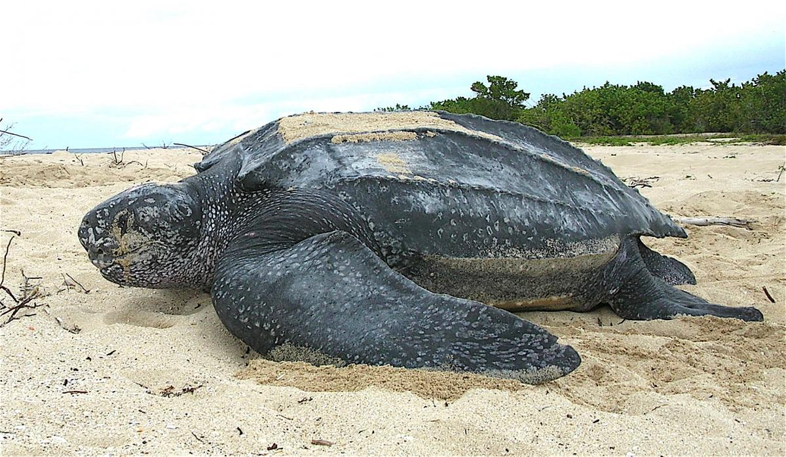
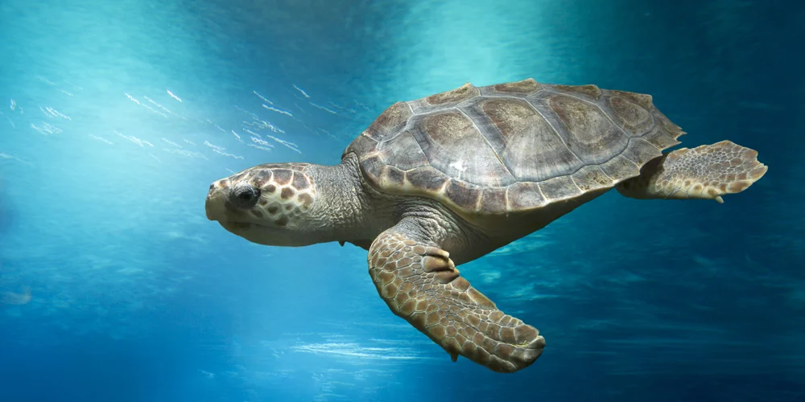

LeatherBack
 The leatherback sea turtle is the largest turtle in the world. They are the only species of sea turtle that lack scales and a hard shell. They are named for their tough rubbery skin and have existed in their current form since the age of the dinosaurs. Leatherbacks are highly migratory, some swimming over 10,000 miles a year between nesting and foraging grounds. They are also accomplished divers with the deepest recorded dive reaching nearly 4,000 feet—deeper than most marine mammals.
Loggerhead Turtle
 The Loggerhead Turtles are usually red and brown in colour and as their name suggests, is easily identifiable because of their large head! Growing to a maximum size of 1m and weighing about 170 to 200kg, these are primarily carnivores and their large muscular jaws are ideal for crushing molluscs and crustaceans which is its favourite meal.
Hawksbill Turtle which is a bit rarer than the Green Turtle. Comparatively, it is much smaller, reaching a maximum length of 90cm and weighing about 50 to 70kg. The Hawksbill gets its name from its narrow head and bird-like beak, which is used to catch animals hiding in small crevices. Although it is smaller, this one is renowned for its beautiful shell, which is made up of 13 symmetrical colorful pieces … pretty neat, right?